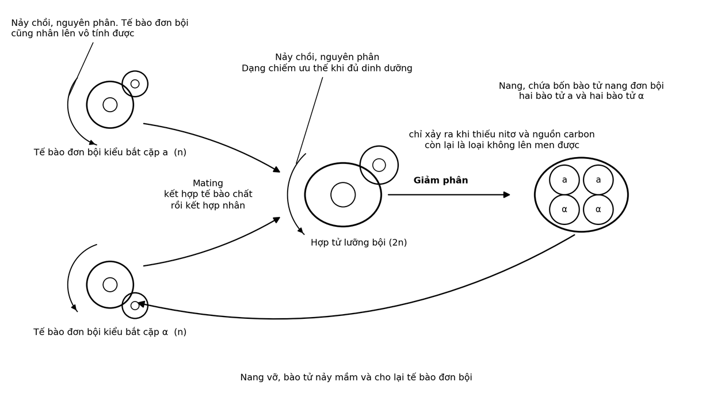
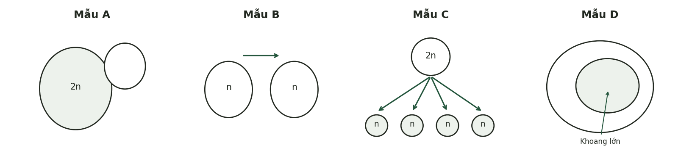

Đọc vách, bào quan và vòng đời nấm men
Vi sinh vật · Slide 7 · 4 trắc nghiệm và 1 tự luận
Bắt đầu học ↓Học trọn chương và làm bộ 80 trắc nghiệm, 15 tự luận
Sau buổi này
- Phân biệt n, 2n, nguyên phân, giao phối và giảm phân trong mô hình nấm men.
- Liên hệ vách, không bào, ty thể với chức năng và giới hạn của kiểu hình.
Gợi nhớ
Giải thích vì sao trong ảnh nảy chồi chưa thể suy ra mức bội thể.
Học kiến thức qua hình
Quan sát hình minh họa

Sơ đồ gốc tiếng Việt của sổ tay, với các nhánh nảy chồi, giao phối và giảm phân tạo nang bốn bào tử.
Quan sát · Dò mũi tên từ hai tế bào đơn bội tới tế bào lưỡng bội và tìm nhánh đi tới nang bốn bào tử.
Dự đoán · Mũi tên nào làm giảm số bộ nhiễm sắc thể, và mũi tên nào giữ nguyên qua nảy chồi?
Mở giải thích sau khi dự đoán
Nhánh giảm phân từ tế bào lưỡng bội cho sản phẩm đơn bội trong nang. Nảy chồi qua nguyên phân giữ mức bội thể của tế bào mẹ.
- n → n
Nguyên phân và nảy chồi giữ mức bội thể.
- n + n → 2n
Giao phối kết hợp hai bộ nhiễm sắc thể.
- 2n → n
Giảm phân tạo các tế bào đơn bội trong bào tử.
- 2n → 2n
Tế bào lưỡng bội cũng có thể nảy chồi.
Đọc mỗi mũi tên theo mức bội thể, dựa trên slide 26–33.
Đọc hình để tự rút ra cơ chế
Quan sát · Một ảnh cho thấy tế bào nấm men lưỡng bội đang nảy chồi.
Dự đoán · Tế bào con vừa hình thành do nguyên phân ở mức n hay 2n?
Mở giải thích sau khi dự đoán
2n, vì nguyên phân bảo toàn mức bội thể trong mô hình.
Kiến trúc nấm men
Nấm men có nhân và các bào quan có màng. Vách của nấm men bánh mì giàu glucan cùng mannoprotein và chitin. Không bào tham gia dự trữ và phân hủy. Ty thể có vai trò hô hấp. Các đặc điểm này giúp tách tổ chức nấm men khỏi vi khuẩn.
Hai mũi tên của vòng đời
Trong mô hình Saccharomyces cerevisiae, tế bào đơn bội hoặc lưỡng bội đều có thể nảy chồi bằng nguyên phân. Hai tế bào đơn bội có kiểu giao phối phù hợp có thể tạo tế bào lưỡng bội. Tế bào lưỡng bội có thể giảm phân và hình thành bào tử đơn bội.
Tên nhóm và phép đếm
Hình dạng, kiểu phân chia và cấu trúc sinh sản giúp đặt giả thuyết phân loại. Có thể cần thêm dữ kiện phân tử. Buồng đếm thấy tế bào hiện diện; CFU cho đơn vị tạo khuẩn lạc.
Liên hệ thực tế
Dùng bản đồ n↔2n để giải thích ảnh vòng đời. Khi vấn đề là khả năng sống, chọn phép đo theo chức năng cần đánh giá.
Cụm bài tập
Sơ đồ nấm men bánh mì trên bảng
A là hình tế bào mẹ 2n có chồi. B là hai tế bào n giao phối. C là tế bào 2n giảm phân và cho bào tử. D là hình bào quan lớn có vai trò dự trữ và phân hủy.

Các ký hiệu n và 2n chỉ mức bội thể. Ô D đánh dấu bào quan theo mô tả trong đề.
Đối chiếu bài làm
Chọn một chỗ còn phân vân. Giải thích lại bằng lời của mình rồi thử một câu cùng dạng.